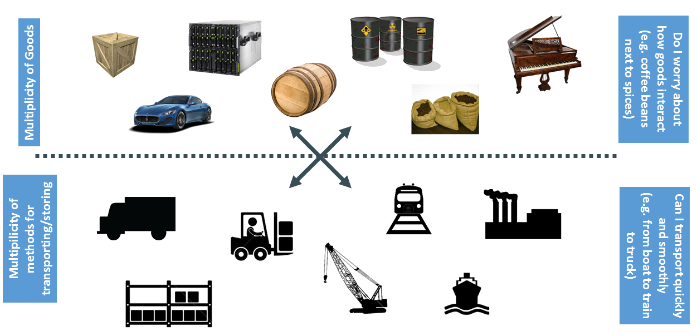
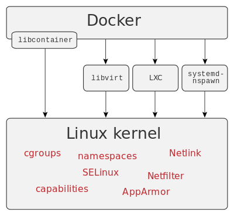

Docker
Hands-on session

About / Disclaimer
MANTAINER Mateusz Michałowski
FROM Poland
WORKDIR Adhese
ADD adhese/docker_techtalk .
ADD official_docker_materials/img/* .
ADD presentation_by_John_Lewis/img/* .
# http://pointful.github.io/docker-intro
ENTRYPOINT /dev/null

Before we start
- Install docker http://docker.com
- git clone https://github.com/mefjush/docker-workshop.git
The Challenge

The Matrix from Hell

Cargo Transport Pre-1960

Also a Matrix from Hell

Solution: Intermodal Shipping Container

Docker is a Container System for Code

Matrix from Hell solved!

But... wait a second...
Virtual Machines do exactly the same!
sure...
now try running 10 VMs on your laptop...
I want the isolation and portability of a VM
without the drawbacks
- 2 minutes of boot time
- 2 GB of VM image size
- 2 GB of ram taken

Docker vs VM

No guest OS? How come?

- Runs natively on Linux (kernel > 3.10)
- Uses built-in isolation features: LXC, cgroups, namespaces, ...
Docker Machine
(or Boot2docker)


Workshop
### Hello World
docker run ubuntu echo "Hello World"
docker ps -a
### Let's change the state docker run ubuntu touch new_file docker run ubuntu ls###(oops! there's no new_file!)
### Where's my new_file?
docker ps -a
docker diff [CONTAINER NAME/ID]
### I want my file back!
docker commit [CONTAINER_ID] [your_name]/ubuntu_with_new_file
docker images
docker run [your_name]/ubuntu_with_new_file ls
### Repositories
docker push [your_name]/ubuntu_with_new_file
# goto: https://hub.docker.com/r/mefju/ubuntu_with_new_file/
### Interactive mode with tty docker run -it ubuntu /bin/bash # TODO prepare a 'workshop/htop' image with 'htop' installed sudo apt-get update sudo apt-get install htop htop # to test: docker run -it workshop/htop htop# DEMO try killing htop from another docker container # processes are isolated between docker containers # but are still just normal processes from host point of view
### TODO find all the changes introduced by installing htopdocker ps -a docker diff [CONTAINER_ID]
### Dockerfile
cd workshop/01_dockerfile
cat Dockerfile
#TODO: let's COPY program.sh to your docker image
#see: https://docs.docker.com/reference/builder/#copy
docker build -t workshop/dockerfile .
docker run workshop/dockerfile ./program.sh Bob
Let's dockerize a small webapp
- rates: currency rates microservice
- portal: currency converter + favicon collector
git clone https://github.com/mefjush/docker-workshop.git
### A simple currency conversion app
cd workshop/02_rates
python -u rates/server.py #no way it will work
### Dockerize it! cat rates/readme.txt # TODO fix the Dockerfile # https://docs.docker.com/reference/builder/ docker build -t workshop/rates . docker run -it workshop/rates # if it works: you'll see: 'http://0.0.0.0:8080/'# TODO discuss Dockerfile instruction order
### Run in detached mode
docker run -d workshop/rates
docker ps
docker logs [CONTAINER_ID]
docker exec [CONTAINER_ID] ps
docker exec -it [CONTAINER_ID] /bin/bash
### How to access it?
# TODO modify Dockerfile to EXPOSE a port
docker run -d -P workshop/rates
docker ps
boot2docker ip # or docker-machine ip default
# access http://[host]:[port]/rates/eur/usd
### Portal Dockerfile
cd workshop/03_portal
# TODO look at Dockerfile - anything wrong with it?
Code repetition
Let's extract duplicated code out
or..
How about putting it all in one image?
### Super-Dockerfile
./stop_all.sh
./rm_all.sh
cd workshop/04_ubuntu_python_web
# TODO list:
# - edit base Dockerfile
# - build 'workshop/ubuntu_python_web' image with 'build_all.sh'
# - modify 02_rates and 03_portal to extend FROM base image
# - run 'build_all.sh' and 'start_*.sh' scripts to test
# test:
# curl http://[DOCKER_HOST]:8080/rates/eur/usd
# curl http://[DOCKER_HOST]:8888
### Volumes (publishing) DEMO: disappearing favicons trick # https://docs.docker.com/userguide/dockervolumes/ docker run -d -p 8888:8888 --name portal \ -v /portal/static workshop/portal docker run --volumes-from portal ubuntu ls /portal/static# what if we want to 're-deploy' portal? docker stop portal docker run --volumes-from portal ubuntu ls /portal/static docker rm portal docker run --volumes-from portal ubuntu ls /portal/static
### More 'persistent' volume
docker create -v /portal/static --name portal_data ubuntu /bin/true
# TODO add option to 'start_portal.sh':
--volumes-from portal_data
### Data migration
mkdir backup
docker run --volumes-from portal_data -v $(pwd)/backup:/backup \
ubuntu cp -r /portal/static /backup
### Linking
# https://docs.docker.com/userguide/dockerlinks/
docker run --link rates:rates workshop/portal env
### Let's link rates service to portal
docker run --link rates:rates workshop/portal env
# TODO fix '03_portal/server.py' (use docker env variables)
# TODO rebuild
# TODO edit 'start_portal.sh':
--link rates:rates
docker inspect -f "{{ .HostConfig.Links }}" portal
### Reusing # https://hub.docker.com/r/ekino/wiremock/ # https://github.com/ekino/docker-wiremock cd 06_wiremock # TODO run mocked rates service using 'ekino/wiremock' image # to test: curl http://[HOST]:8081/rates/eur/usddocker run -d -p 8081:8080 \ -v $(pwd)/__files:/wiremock/__files \ -v $(pwd)/mappings:/wiremock/mappings \ --name mocked_rates \ ekino/wiremock
### Connect portal to mocked rates service
# TODO edit 'start_portal.sh':
--link mocked_rates:rates
### Docker compose
cd workshop/08_compose
cat docker-compose.yml
docker-compose up
Trying out stuff: ELK stack
- elasticsearch
- logstash
- kibana
cd workshop/09_metrics
docker-compose up
What did we learn?
- Basic docker commands
- How to dockerize an app
- Volumes
- Links
- Using docker for rapid 'infrastructure prototyping'
Why is Docker cool?
- Isolation
- For developer: abstracts out infrastructure (ubuntu, fedora, redhat, ...)
- For devops - abstracts out code (java, python, node, ...)

We didn't cover
- Service discovery, clustering, distribution, ...
- Docker UI (Kitematic, Panamamax, ...)
- Docker hosting services
Quiz: Which of the following is illegal?
- boring_wozniak
- sick_darwin
- mad_torvalds
### Unless...
docker run --name boring_wozniak ubuntu ls
Thank you!
We are hiring
Java developer
Frontend developer